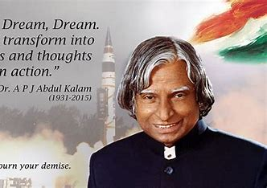

Introduction
Avul Pakir Jainulabdeen Abdul Kalam, Indian scientist and honorable 11th president (2002-2007) of India, was born on October 15, 1931, in Rameswaram, Tamil Nadu. He played a leading role in developing missile and nuclear weapon projects, which earned him the nickname "The Missile Man."
Kalam was a simple and unpretentious person who lived a modest lifestyle. He had a keen interest in literature and wrote poems. He never married and always faced the media himself for his failures while letting others address his success. He remained active until the very end, delivering a lecture at the Indian Institute of Management when he collapsed and passed away on July 27, 2015.
Timeline
- 1931: Born to a Tamil Muslim family in the pilgrimage center of Rameswaram on Pamban Island, then in the Madras Presidency and now in the State of Tamil Nadu.
- 1954: After completing his education at the Schwartz Higher Secondary School, Ramanathapuram, Kalam went on to attend Saint Joseph's College, Tiruchirappalli, then affiliated with the University of Madras, from where he graduated in physics.
- 1955: He moved to Madras to study aerospace engineering in Madras Institute of Technology.
- 1960: After graduating from the Madras Institute of Technology, Kalam joined the Aeronautical Development Establishment of the Defence Research and Development Organisation (DRDO) as a scientist where he started his career by designing a small hovercraft, but remained unconvinced by his choice of a job at DRDO.
- 1961: Joined DRDO as a scientist.
- 1969: Kalam was transferred to the Indian Space Research Organisation (ISRO) where he was the project director of India's first Satellite Launch Vehicle (SLV-III) which successfully deployed the Rohini satellite in near-earth orbit in July 1980.
- 1980: Became the project Director for India's First Indigenous Satellite Program.
- 1980: Was involved in the development of several Indigenous Missiles for India like Agni, Prithvi.
- 1981: Awarded Padma Bhushan.
- 1990: Awarded Padma Vibhushan.
- 1992: Kalam started to serve as the Chief Scientific Adviser to the Prime Minister and the Secretary of the Defence Research and Development Organisation. It was this time when the Pokhran-II nuclear tests were conducted which he played an intensive political and technological role.
- 1997: Awarded Bharat Ratna.
- 2002: Kalam served as the 11th President of India, succeeding K. R. Narayanan. He won the 2002 presidential election with an electoral vote of 922,884, surpassing the 107,366 votes won by Lakshmi Sahgal.
- 2012: Kalam launched a programme for thethe youth of India called the What Can I Give Movement, with a central theme of defeating corruption.
- 2015- Kalam travelled to Shillong to deliver a lecture on "Creating a Livable Planet Earth" at the Indian Institute of Management Shillong. While climbing a flight of stairs, he experienced some discomfort, but was able to enter the auditorium after a brief rest.At around 6:35 p.m. IST, only five minutes into his lecture, he collapsed.He was rushed to the nearby Bethany Hospital in a critical condition; upon arrival, he lacked a pulse or any other signs of life.Despite being placed in the intensive care unit, Kalam was confirmed dead of a sudden cardiac arrest at 7:45 p.m IST.His last words, to his aide Srijan Pal Singh, were reportedly: "Funny guy! Are you doing well?"
His Famous Books
The People's President also had a blessed talent of writing books, which made him more admiring and inspiring.
- India 2020: A Vision for the New Millennium.
- Wings of Fire: An Autobiography.
- Ignited Minds: Unleashing the Power within India.
- The Luminous Sparks: A Biography in Verse and Colours.
- Guiding Souls: Dialogues on the Purpose of Life.
- Mission of India: A Vision of Indian Youth.
For more books, Click here
Honors Received by Dr. APJ Abdul Kalam
"For great men, religion is a way of making friends; small people make religion a fighting tool."
- Dr. APJ Abdul Kalam
Do read more about this impeccable personality Click here
Created by Moin Pasha.